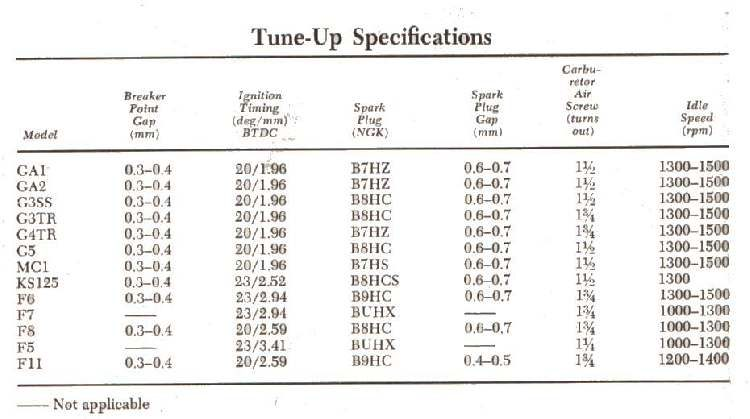
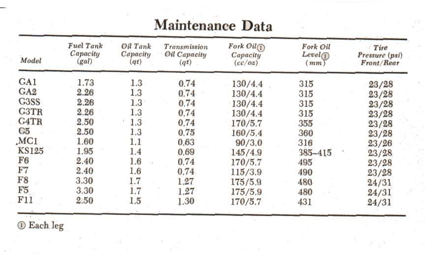
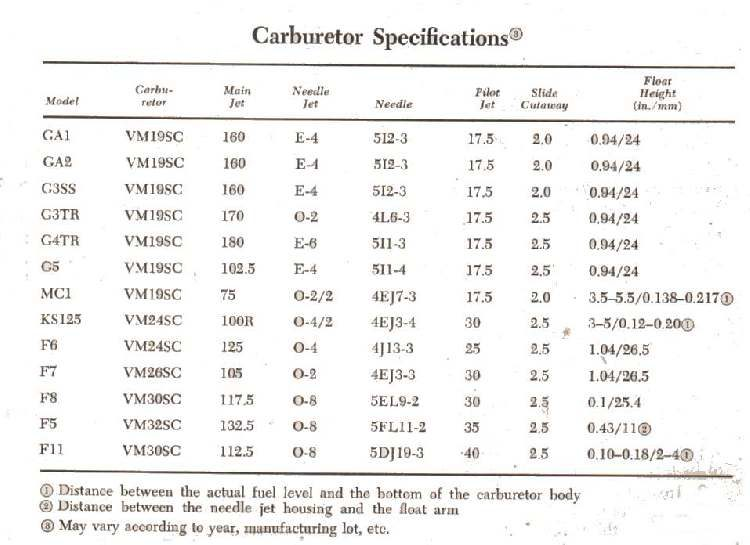

Specification tables ("specs") give the sizes and settings for each model: spark plug type and gap, chain size, battery, tyre sizes, oil and fork oil quantities, carburettor jets, valve clearances, torque and wear limits. Many tables cover many models on one page, so it is easy to read the wrong row or the wrong unit. A wrong value can damage the engine, so take a few minutes to read the table properly.
Safety
- Never guess a torque, clearance or limit. If you cannot find the value for your exact model, use the value in your bike's manual or ask a dealer.
You need
- The spec table for your bike: the shop manual, the owner's manual, or a table from a parts supplier.
- Your bike's model code and year: Find and read the frame and engine numbers.
Steps
- Find your model code. Tables list models by code, often with a letter or number after it for the year or version. Match the full code, not only the engine size. Two bikes with the same name and size can have different parts.
- Read the heading and the units. Check whether each column is in mm or inches, N·m or ft-lb, litres or US quarts, kPa or psi. Some tables give both.
- Follow the row with a ruler. Lay a ruler or paper under the row so your eye does not slip to the next model.
- Read the footnotes. A small circled number or mark next to a value points to a note under the table, for example how a float height is measured, which way a needle clip position is counted, or that a value applies only to one version. A dash usually means "not applicable".
- Know "standard" from "limit". Many tables give a standard value (new) and a service limit (worn out). Replace the part when it reaches the limit, not when it moves away from standard.
- Know "dry" from "change". Oil and fork oil tables may give a quantity for a dry, rebuilt unit and a smaller quantity for an oil change. Use the right one and check the level afterwards.
- Convert units carefully if your tools use other units: 1 inch is 25.4 mm; 1 ft-lb is about 1.36 N·m; 1 kgf·m is about 9.8 N·m; 1 psi is about 6.9 kPa; 1 US quart is about 0.95 litre; 1 US gallon is about 3.8 litres. Write the converted value down; do not round a torque up.
- Cross-check one value you can see. For example, the plug type in the table should match the plug in the engine, or the chain size should match the number on the chain side plates (Identify the size of a drive chain). If it does not, you may have the wrong row or a modified bike.
- Write the values you need for the job on a card and keep it with the bike.
Check your work
- Every value you use came from your model's row, with the right unit and any footnote applied.
- Torque values are set on the wrench in the same unit as written: Use a torque wrench correctly.
If it did not fix the problem
- The manual's steps do not match the engine in front of you: Check a shop manual's steps against the engine before you trust them.
- No table lists your model: Cannot find parts for an old or imported bike.